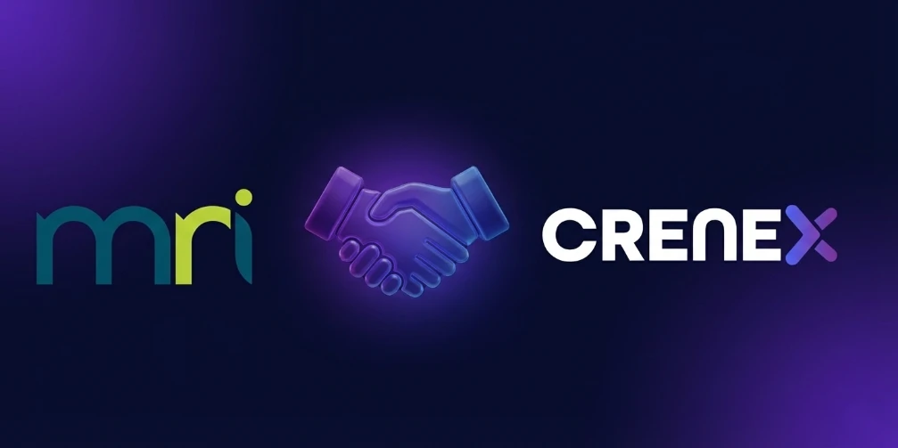

Specialty Leasing in the U.S. 2026
The market forces behind the shift — and what 2026 will bring
Read article →Crenex insights
Market perspective, practical guidance and product news for teams managing specialty and short-term leasing across real estate portfolios.
Latest thinking
Six articles from the Crenex team, collected in one place.
The market forces behind the shift — and what 2026 will bring
Read article →The numbers behind the shift — and what 2026 will bring
Read article →
Crenex is proud to announce its official partnership with MRI Software, a global leader in real estate technology. This strategic alliance leverages MRI’s open, AI-driven ecosystem and Crenex’s advanced leasing management…
Read article →The short-term leasing market is undergoing rapid transformation driven by changing consumer behavior, digitalization, and the rising demand for flexible rental solutions. As the market heads toward substantial global growth by…
Read article →The short-term leasing market is experiencing rapid growth, creating both new challenges and significant opportunities for shopping centers. High tenant turnover, complex documentation, and rising consumer expectations highlight…
Read article →Digitalization has become a strategic pillar for shopping malls, enabling smoother operations, improved tenant communication, and long-term business sustainability. This checklist provides a clear framework to assess your mall’s…
Read article →